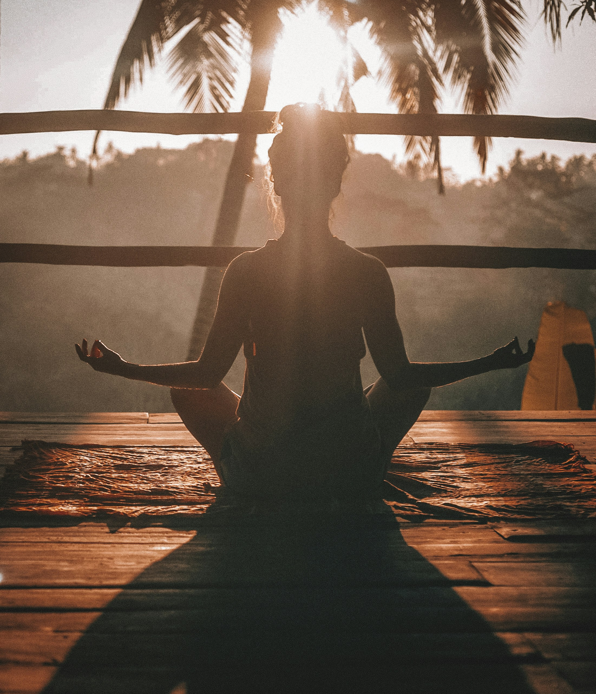

Mentalno zdravlje studenata
Trenutno online savjetnika: 12
Ispitna anksioznost
Naucite kako prevladati strah od ispita i poboljsati fokus.
Procitaj vise

Hrana za mozak
Koje namirnice dokazano poboljsavaju pamcenje i koncentraciju.
Procitaj vise
Higijena sna
Zasto je san kljucan za procesiranje novih informacija.
Procitaj vise

Joga za fokus
Jednostavne vjezbe istezanja koje mozete raditi u pauzi.
Procitaj vise

Mindfulness
5 minuta meditacije dnevno moze promijeniti vasu reakciju na stres.
Procitaj vise

Priroda i zdravlje
Kratka setnja parkom smanjuje nivo kortizola u krvi.
Procitaj vise